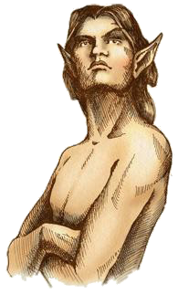
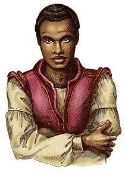
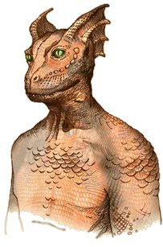
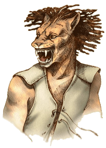

Dans chaque jeu The Elders Scrolls, le joueur peut créer son personnage et choisir sa race. Dans la saga, on compte 10 races jouables.
Les mers ou elfes
Dans le monde de The Elder Scrolls, Mer est le nom générique donné aux elfes. Originaires du continent Aldmeris, aujourd'hui disparu, ils auraient par la suite migré vers les terres de Tamriel.
Pendant les différentes guerres qui les opposèrent aux humains, les Elfes s'unirent et se divisèrent, colonisèrent et furent chassés. Il en résulte qu'il existe actuellement quatre races principales qui sont les Hauts-Elfes, les Elfes Noirs, les Elfes des Bois et les Orques.
Altmer

Originaires de l'Archipel de l'Automne (souvent appelé Alinor par ses habitants), les Hauts Elfes ou Altmers sont les plus doués de tous les peuples de Tamriel dans les arts mystiques.
Ils sont généralement très grands, plus grands que la grande majorité des races de Tamriel. Leur peau est le plus souvent très pâle et dorée. Comme les autres elfes, leurs oreilles sont pointues. Plutôt svelte, cet aspect est renforcé par leur apparence physique fine due à leur faible musculature.
Adroits, intelligents et dotés d’une très forte volonté, les Hauts-Elfes sont souvent versés dans les arts des arcanes grâce à leur affinité magique naturelle et aux nombreux siècles qu'ils ont consacrés à leurs études.
Les Hauts Elfes sont souvent peu appréciés par les autres races du fait de leur arrogance et de leur sentiment de supériorité envers ce qu'ils appellent les "races inférieures".
Bosmer
Les Elfes des bois (ou Bosmers en langue elfe) sont le clan elfique de Valboisé qui préfèrent une existence simple, en harmonie avec la terre et les animaux.
Ils mênent une vie moins noble que leurs cousins Dunmers ou Altmers. La cause de cette vie simple est partiellement liée au pacte vert, pacte qui leur interdit de faire du tort à une plante.
Le peuple des forêts occidentales de Val-Boisé est habile et rapide, ce qui en fait d'excellents éclaireurs et d'astucieux voleurs. Ce sont les meilleurs archers de Tamriel et ils sont connus pour leur capacité à commander les animaux.
Dunmer

Les Elfes Noirs — aussi appelés Dunmers en Morrowind, leur province d'origine— sont des elfes spécialistes de la furtivité et de la magie de destruction.
Forts, intelligents, vifs, distants et réservés, on dit pourtant des Dunmers qu'ils sont des êtres infortunés et que leur destinée ne leur sera jamais favorable.
Ils possèdent une peau sombre, d'où leur nom très utilisé d'Elfes Noirs en Bordeciel, mais aussi une silhouette plutôt élancée, laissant très vite voir qu'ils possèdent une agilité et une dextérité faisant d'eux des guerriers pouvant facilement rivaliser avec le cimeterre d'un Rougegarde ou encore avec leur cousin Altmer (Hauts-Elfes) au niveau de la magie.
Les Elfes Noirs sont très fermés et méfiants, faisant d'eux des Elfes parfois mystérieux et lugubres.
Orque

Les Orques ou Orsimers sont un peuple fier vivant dans les monts de Whrothgarian, dans une petite enclave nommée Orsinium dans la province de Hauteroche. Ils sont imposants physiquement et sont de très bons guerriers, maniant la hache d'arme et le marteau de guerre avec une dextérité surprenante, ce sont des guerriers acharnés. Ils sont parfois craints par les autres races qui les traitent comme des barbares, mais ils sont en fait loyaux et justes, en témoigne l'égalité des sexes qu'ils manifestent et défendent ainsi que leur présence au sein de la Légion Impériale.
Ayant un ton de peau allant du vert clair au brun des plus foncé, aussi résistant que le cuir, et ayant une musculature très développée, les Orques par leur carrure et leur aspect bestial sont une race qui se démarque considérablement parmi les Mer et les Hommes.
Ils sont également la seule race à développer des crêtes osseuses et des arcades sourcilières dotées de cornes. Les Orques sont ainsi, un peuple guerriers de renom et également l'une des races les plus grandes et des plus robustes de Tamriel, célèbre pour leur courage inébranlable lors des combats, pour leur endurance et leur force exceptionnelle durant les batailles. Ils sont également reconnus pour être de redoutables et cruels guerriers.
Les humains
Les humains, autrefois appelés nédiques, étaient originaire du continent d'Atmora puis ont migré sur les côtes nord de Tamriel, en Bordeciel. Par la suite, les nédiques se sont scindés en plusieurs groupes, en partant alors à l'exploration de Tamriel. Croisant ainsi les elfes qui occupèrent alors déjà Tamriel, de nombreux conflits s'ensuient entre les deux peuples.
Au fil des années et des guerres qui les opposèrent aux elfes, la plupart des Nédiques ont évolué pour devenir les Brétons et les Impériaux, ou ont été assimilés/éradiqués par les Nordiques et les Rougegardes. Depuis le second millénaire de l'Ère Première, il ne subsiste que quelques enclaves isolées qui peuvent être qualifiées de "Nédiques".
Bréton

Les Brétons vivent dans la province de Hauteroche et sont doués pour tout ce qui concerne la magie et le surnaturel. Ils font partie des races les plus intelligentes sur Nirn. En outre, de nombreux grands mages sont originaires de leur province de Hauteroche.
Ils possèdent une faculté de résistance naturelle à la magie. Du sang elfique coule dans leurs veines, issu du métissage des nédiques et des Altmers ; ils sont souvent appelés Manmers (homme-elfe) ou demis-elfe, certains brétons possèdent de fortes caractéristiques elfiques, yeux bridés, oreilles pointues.
Impériale

Les Impériaux sont les humains qui peuplent la province impériale de Cyrodiil, et qui ont conquis Tamriel. Bien que physiquement plus faibles et plus petits que d'autres races, les Impériaux sont considérés comme les meilleurs soldats de rang et leur troupes en armures lourdes sont parmi les meilleures de Tamriel.
Les Impériaux sont aussi de très habiles commerçants et diplomates ce qui leur a permis de conquérir tout Tamriel politiquement. Les Impériaux sont renommés pour leurs stratégies durant les batailles et sont aussi connus pour être les meilleurs en furtivité et espionnage parmi les humains. Les personnalités les plus riches de Tamriel sont souvent des Impériaux de par leur facilité à diriger et commander.
Nordique

Les Nordiques sont les descendants d'Ysgramor et de ses 500 guerriers, qui ont débarqué d'Atmora et combattu les elfes, qui à cette période de l'histoire, gouvernaient Tamriel, fondant ainsi la première colonie humaine sur le continent de Tamriel. Ainsi, Bordeciel est le plus vieil établissement humain en Tamriel, ce qui fait des Nordiques la plus ancienne race humaine sur ce continent. Même ces derniers siècles, de nombreux humains parmi les plus influents sont nordiques. Parmi eux, Tiber Septim, qui fonda son Empire en Cyrodiil.
Les citoyens de Bordeciel sont de grands guerriers aux cheveux blonds. Ils sont qualifiés de "barbares" par les autres races car ils sont très agressifs pendant les combats. C'est la deuxième race dîte "barbare" après les Orques. Forts et entêtés, voire téméraires, les Nordiques sont aussi connus pour leur résistance au froid, même d’origine thaumaturgique. La violence fait partie du quotidien des Nordiques ; ils sont d’ailleurs tous rompus à la plupart des armes et techniques de combat, participent gaiement aux guerres, et mènent bataille avec une férocité fanatique qui traumatise et épouvante leurs adversaires.
Rougegardes
Originaires d'un continent, appelé Yokudan, les Rougegardes migrèrent vers les côtes ouest de Tamriel à la suite d'un cataclysme qui s'est abattu sur leur continent d'origine. Ils s'installèrent dans la province de Lenclume en chassant les peuplades déjà présentes, principalement des nédiques et des orques.
Les Rougegardes sont des hommes forts, agiles et naturellement doués pour tous les types d'armes, ce qui fait d'eux une des meilleures races guerrières de Tamriel. Ils ont la peau bronzée, tannée par le soleil du désert de Lenclume.
Leur indépendance d'esprit fait d'eux un peuple considéré comme fier et libre malgré la colonisation cyrodiléenne. Cet aspect de leur personnalité les rend aussi plus efficaces en tant qu'éclaireur, aventurier ou mercenaire plutôt que des soldats qu'on peut soumettre à une discipline stricte.
Races animales
Le terme de Betmer, littéralement "Peuple Animal", regroupe l'ensemble des peuples qui ne sont pas considérés comme elfiques ou humains. Ce terme est flou et les espèces considérées comme betmeri varient en fonction des personnes.
Ce terme n'a aucune réalité biologique : au sein des betmers se trouvent les Khajiits et les Dreughs pourtant de souche elfique, ou encore les Minotaures de souche humaine. Les Argoniens ou les Dragons quant à eux proviennent d'autres souches distinctes des elfes et humains.
Argonien
Les Argoniens, aussi appelés "Saxhleel", sont des créatures autochtones ayant l'apparence d'homme reptile. Ils sont couverts d'écailles et possèdent une queue, les faisant ressembler à des lézards géants et se déplaçant sur 2 pattes.
Que ce soit sous l'eau ou sur terre, ils sont de redoutables adversaires même désarmés, grâce à leurs dents acérées et leurs griffes. Ils sont totalement immunisés face aux poisons et aux maladies, ce qui leur permet de vivre en sécurité dans leur province d'origine : le Marais Noir.
Les Argoniens sont d'une nature très renfermé et solitaire. Cela est principalement dû au rejet des humains et à l'esclavage des elfes contre eux. Ils sont néanmoins très loyaux envers leurs amis, pour qui, ils iraient jusqu'à mourir.
Ils sont fortement mis à l'écart par les autres races qui les craignent, car ceux-ci pensent qu'ils sont de nature hostile.
Khajiit
Les Khajiits sont une race féline humanoïde, natifs de la province d'Elsweyr. Ils seraient issus d'une expérience des Elfes, c'est pour cette raison qu'une majorité des Khajiits est du côté du Domaine Aldmeri. Intelligents, prestes et souples, ils font d'excellents voleurs en raison de leur agilité naturelle et de leurs dons acrobatiques sans pareil. Tous les Khajiits sont nyctalopes.
Leur apparence est très variable et dépend des phases des lunes à leur naissance. On dénombre un peu moins d'une vingtaine d'espèces ; certains ressemblent presque à des Elfes tandis que les Senche-Raths ont une apparence de tigre et les Cathay-Raths sont proches du jaguar. En Morrowind les plus communs sont les Suthay-Raths, agiles et à la peau fine, de par la préférence des esclavagistes pour cette espèce tandis qu'en Cyrodiil, ce sont les Cathays.